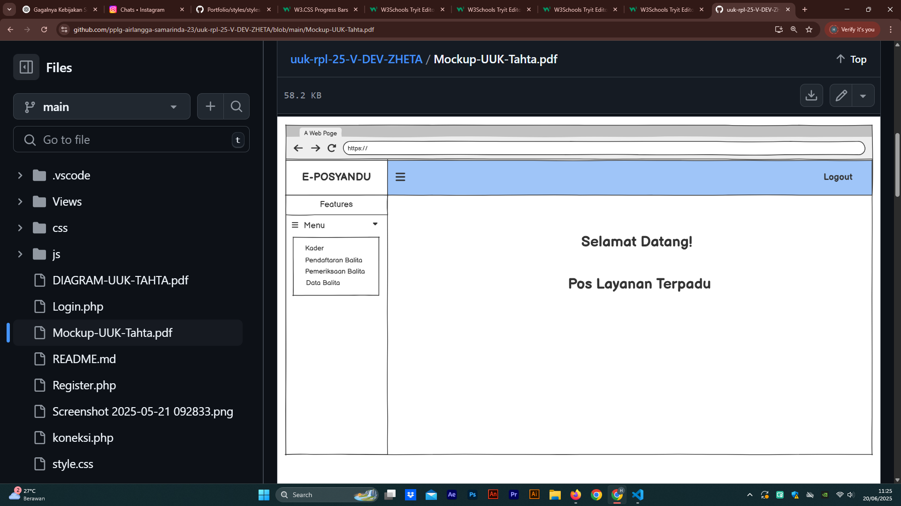

Tentang Saya
Halo! Nama saya Zheta (Alias), Saya adalah seorang Web Developer dari SMKTI AIRLANGGA SAMARINDA KALIMANTAN TIMUR, dengan pengalaman satu tahun di bidang pengembangan UI/UX dan Front End Web. Saya selalu mengasah skill ini karena bagii saya pemrograman bukan sekedar tugas tetapi juga sebuah seni yang memiliki nilai estetika. Oh iya saya juga memiliki skill editing menggunakan Adobe After Effect, Premiere, Dan photoshop dengan pengalaman 3 tahun (dari smp)
Lalu Tugas saya adalah mengembangkan website yang fungsional, ramah pengguna, dan tetap menarik secara visual. Selain Itu saya memberikan sentuhan personal pada setiap proyek agar website yang dibuat dapat mnarik perhatian dan mudah untuk digunakan
Keahlian
- [Editing]: Memiliki keahlian dalam bidang editing dan kemampuan dalam menguasai software editing seperti Adobe After Effect, Photoshop, dan
- [Front-End Developer]: memiliki keahlian dalam menciptakan antarmuka pengguna (UI) dan pengalaman pengguna (UX) yang menarik untuk situs web dan aplikasi web. Mereka menggunakan HTML, CSS, dan JavaScript untuk mewujudkan desain visual dan interaksi yang diinginkan pengguna.
- [Teknisi]: memiliki keahlian memelihara sistem komputer, mengatasi kesalahan, dan memperbaiki perangkat keras organisasi seperti hp dan komputer/laptop.
- [Problem Solving]: memiliki kemampuan untuk mengenali, menganalisis, serta menyelesaikan masalah secara efektif dan efisien
Proyek


Furina Bot V3 - WhatsApp Bot
Deskripsi: Bot WhatsApp dengan banyak fitur, salah satunya bisa membuat stiker otomatis.
Link: Lihat Proyek

Web E-Posyandu
Deskripsi:Sebuah web R-Posyandu yang membantu kader posyandu untuk mencatat tumbuh kembang balita. Memiliki fitur utama seperti CRUD, Kader Dapat Mengelola Data Bayi, Dan Kader Dapat Mencatat Pertumbuhan Bayi
Link: Lihat Proyek
Editing Project 1
Deskripsi: Proyek Editing AMV (Anime Music Video) Typography yang saya buat di sela waktu kosong (gabut) menggunak Adobe After Effect.
- Editing Time : 1 Week
- Render Time : 2 Hour
Link: Lihat Proyek
Editing Project 2
Deskripsi: Proyek Editing AMV (Anime Music Video) Typography yang saya buat di sela waktu kosong (gabut) menggunak Adobe After Effect.
- Editing Time : 1 Day
- Render Time : 2 Hour
Link: Lihat Proyek
Editing Project 3
Deskripsi: Proyek Editing AMV (Anime Music Video) Typography yang saya buat di sela waktu kosong (gabut) menggunak Adobe After Effect.
- Editing Time : 3 Day
- Render Time : 3 Hour
Link: Lihat Proyek
- Email: meowzheta@gmail.com
- Instagram: @meowzheta
- GitHub: zheta-dev
- WhatsApp: +62 812-3456-789